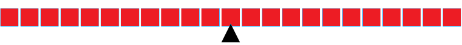

Modo Avanzado
Tutorial.
El formato es el siguiente:


Tutorial.
El formato es el siguiente:
Definicion no formal
Una Maquina de Turing es un modelo de computacion. Puedes pensar que es una maquina en la cual puedes escribir una palabra como

Cada celda puede contener un simbolo o ser vacia(ε). En la imagen de arriba cada celda esta vacia. La cinta tiene una cabeza de lectura-escritura.
Cada Maquina de Turing tiene un conjunto de
Si esta en un estado qi leyendo un simbolo a, entonces muevase a un estado qj, escriba un simbolo b y muevase a lo mas una celda en direccion izquierda o derecha (La cabeza tambnien puede quedarse en la misma posicion).
Nota que qj puede ser el mismo estado qi y "b" puede ser igual a "a".De ahora en delante, la palabra w en proceso por la Maquina de Turing M sera llamada la ejecucion de M sobre w. Al inicio de la ejecucion, la entrada w se encuentra en algun lugar en la cinta y la cabeza de lectura-escritura apunta al primer simbolo de la entrada. Ahora Considera una Maquina de Turing con un estado incial q0 y supone que una de sus transicion es:
Si esta en estado q leyendo un simbolo a, entnces debe quedarse en el estado q, escribir el simbolo a y mover la cabeza una celda a la derecha.
Si le damos a esta maquina la entrada HolaMundo!, al inicion de la ejecucion la cinta se veria asi:
#image#
En la primera transicion, la cabeza escribira a y se movera un espacio a la derecha. La maquina se quedara en el mismo estado.
Asi es como se veria la cinta despues de aplicar la transicion:
#image#
La ejecucion se detendra cuando no haya una transicion por ser aplicada. Por ejemplo si la maquina anterior no tiene transcion de la forma "Si esta en estado qi leyendo simbolo e, entonces deberia...", la ejecucion consisiteria en una sola transicion.
Finalmente, Hay un conjunto de estados, llamados estados de aceptacion, usualmente denotados por F, el cual es subconjunto de Q. Una vez la ejecucion con la entrada w ha finalizado, decimo que la maquina acepta w si el estado en que se detuvo la ejecucion es un estado de aceptacion.
Una MT es una 7-tupla (Q,Σ,Γ,δ,q0,qA,qR)
Donde: